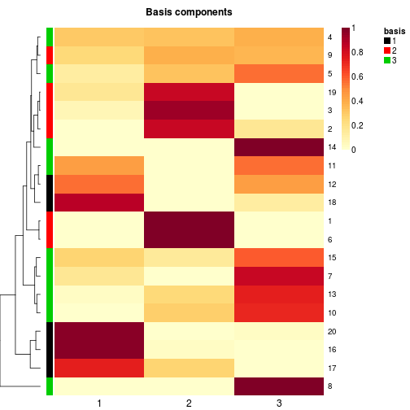
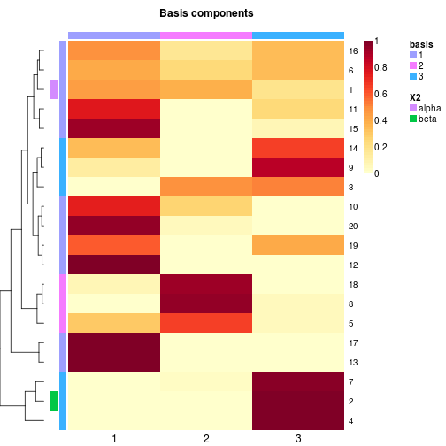
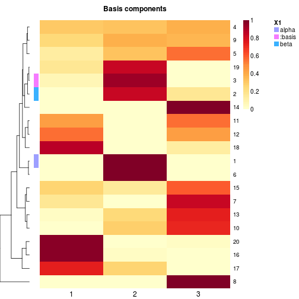
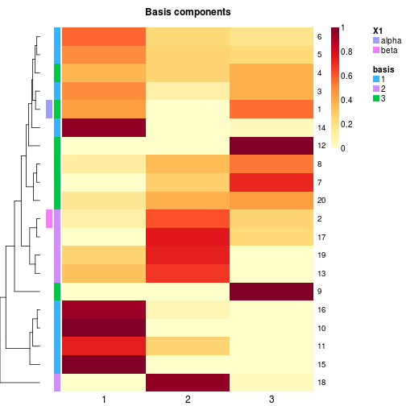
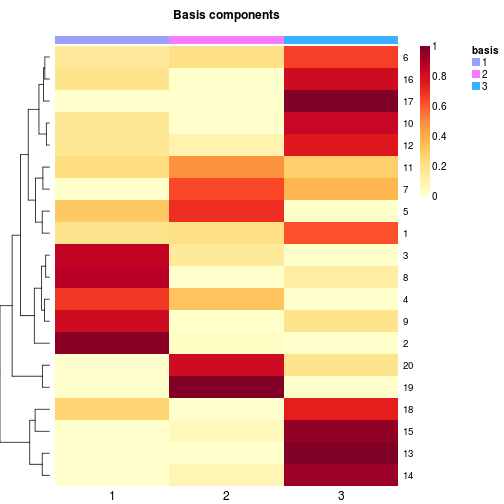
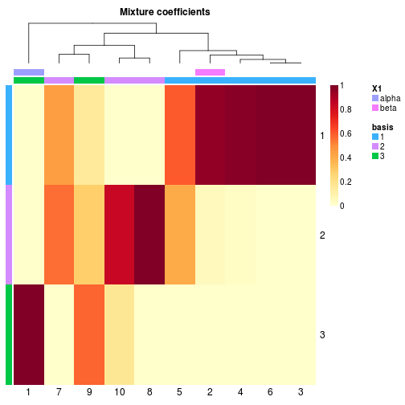
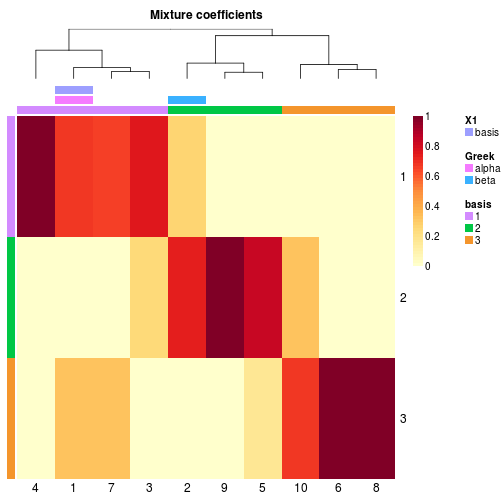
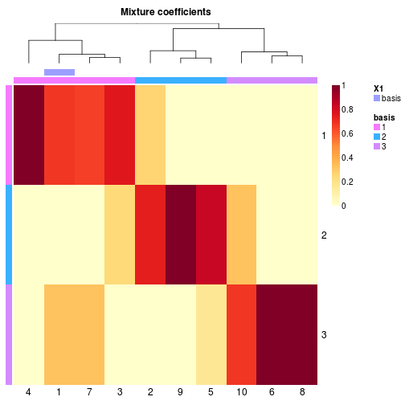

Heatmaps of NMF objects
#' # random data with underlying NMF modelv <- syntheticNMF(20, 3, 10)# estimate a modelx <- nmf(v, 3)# highligh row only (using custom colors)basismap(x, tracks=':basis', annColor=list(basis=1:3))
## character annotation vector: ok if it does not contain 'basis'# annotate first and second row + automatic special trackbasismap(x, annRow=c('alpha', 'beta'))
# no special track herebasismap(x, annRow=c('alpha', 'beta', ':basis'), tracks=NA)
# with special track `basis`basismap(x, annRow=list(c('alpha', 'beta'), ':basis'), tracks=NA)
# highligh columns only (using custom colors)basismap(x, tracks='basis:')
# changing the name of the basis annotation trackbasismap(x, annRow=list(new_name=':basis'))
# coefficient matrixcoefmap(x, annCol=c('alpha', 'beta')) # annotate first and second sample
coefmap(x, annCol=list('basis', Greek=c('alpha', 'beta'))) # annotate first and second sample + basis annotation
coefmap(x, annCol=c(new_name='basis'))